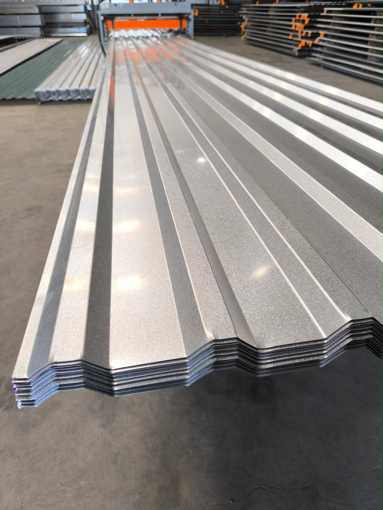
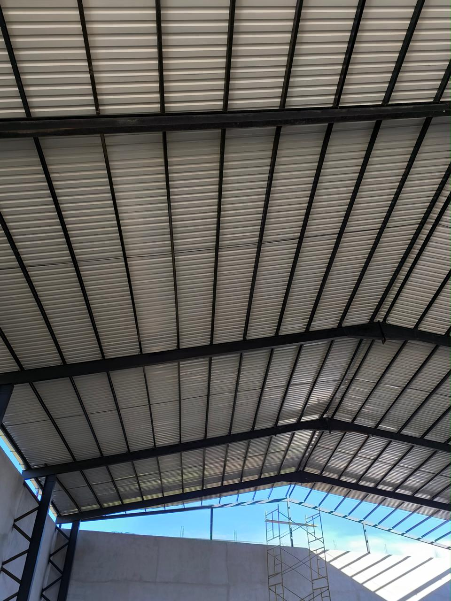
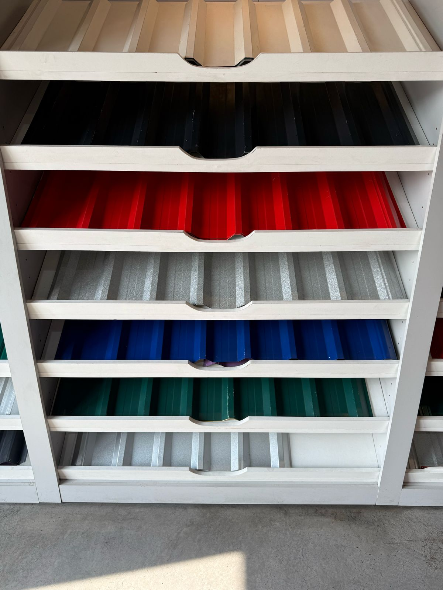

Modelos de láminas



Lámina acanalada de fijación expuesta, con perfil trapezoidal y refuerzo en el valle, que ofrece alta rigidez y seguridad. Ideal para construcciones industriales, comerciales y residenciales. Disponible en Aluzinc o esmaltada, fabricada a medida y en diversos calibres.
Calibres:
- C24 (0.55 mm)
- C26 (0.40 mm)
- C28 (0.30 mm)
Colores:
- Verde
- Azul
- Rojo
- Negro
- Blanco
- Gris